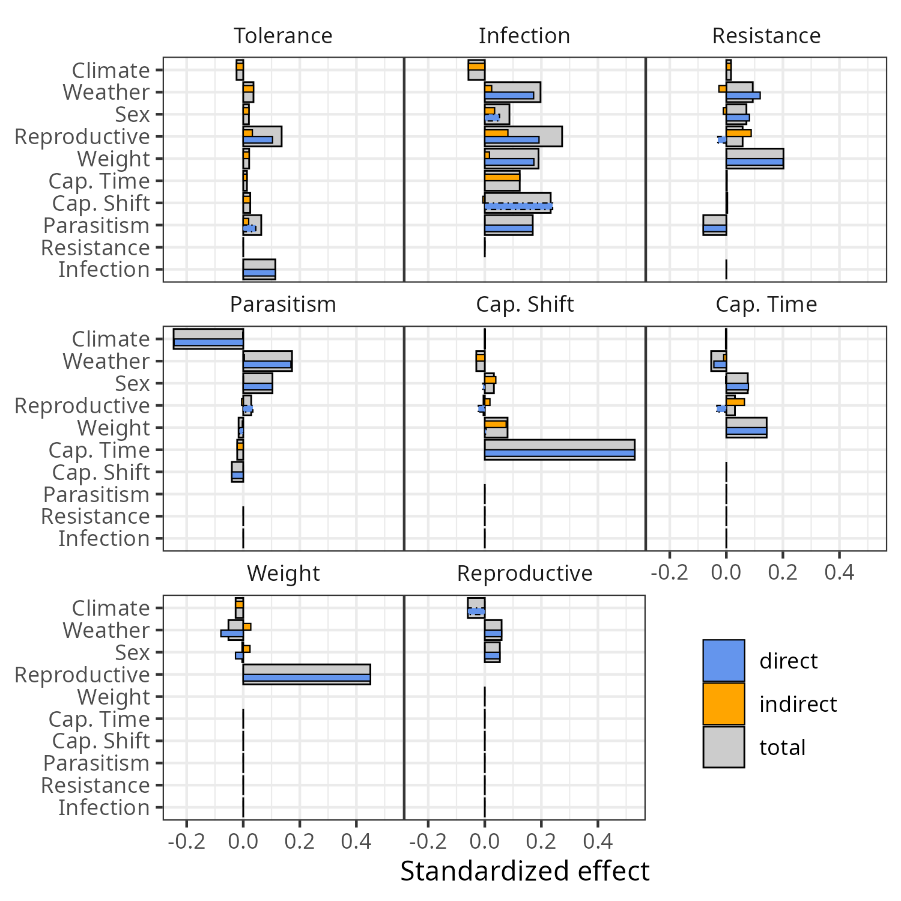
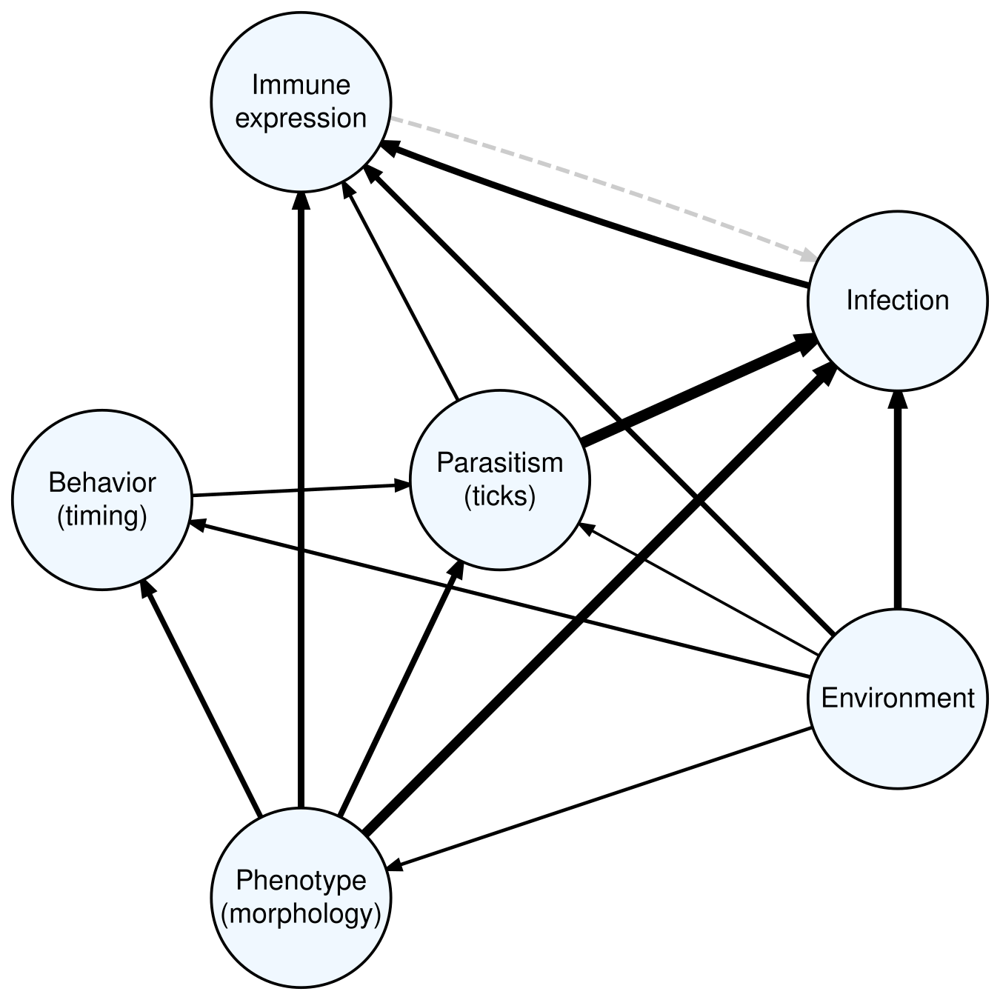

Simplified SEMs
This chapter will build on the insight gained from the previous chapter to build the final SEMs for our manuscript. In total, there will be three SEMs. The first SEM is a “full” model that explores all components of our proposed model (mouse traits and behaviors, mouse interactions with disease vectors, mouse gene expression, environment, and infection status). To ensure maximum power, this full model utilizes data for both P leucopus (PELE) and P maniculatus (PEMA). The two remaining SEMs will explore the specific differences in disease dynamics between PELE and PEMA. These models will have identical structure and will only differ by the species with which they are fitted. In order to make comparisons between two identically-structured SEMs, some variables from the full SEM are excluded from these species-specific models. This simplification is necessitated by low representation of PEMA for some combinations of variables. By structuring the analysis in this way, with one overarching model and smaller species-specific models, we are able to holistically explore the factors of disease dynamics in this system while also acknowledging and quantifying differences among species where possible.
Species identification
Because we are interested in species-specific effects and because field assignments are known to be error-prone, we re-assessed species identification prior to this chapter. Specifically, we used the following algorithm to assign species:
First, any individuals for which genetic information are available were assigned to the species indicated by genetic markers.
For individuals not covered by step 1, discriminant analysis (trained on individuals with genetic assignments) was used to assign observations for which ear length, hind foot length, and weight were available. These 3 variables had the highest assignment accuracy for both species (90% for PELE, 86% for PEMA). Individuals were assigned by averaging the predicted species across observations.
For individuals not covered by steps 1-2, discriminant analysis was used to assign observations for which ear length and weight were available. These two variables also had a high assignment accuracy for both species (90% for PELE, 84% for PEMA). Individuals were assigned by averaging the predicted species across observations.
Individuals not covered by steps 1-3 that were captured at BLAN, HARV, SERC, or ORNL were assigned PELE. This was done because genetic assessment identified no PEMA at any of these sites. Note: HARV specifically had extremely poor field identification, with the vast majority of individuals being labeled as Peromyscus spp. and about half of the individuals identified to species were (incorrectly) labeled as PEMA.
Any remaining individuals were given the field assignment that occurred most commonly across their full capture record.
Full SEM
The full SEM exploring relationships between mice characteristics and behaviors, environmental variation, gene expression, and Borrelia infection was fitted to all available data and is visualized by Figure ??. The model hypothesizes that 1) individual traits covary and influence individual behavior, contact with disease vectors (tick parasitism), expression of immunity genes, and infection status; 2) behaviors covary and influence contact with vectors and infection status; 3) tick parasitism influences immunity expression and infection status; 4) expression of immunity-associated genes are associated with infection status (influenced by resistance and influencing tolerance); and 5) environmental factors influence all other factors.
Our results show that these hypothesis are largely met:
Mouse phenotype is significantly and directly associated with behavior (sex, weight), parasitism rates (sex), resistance expression (sex, weight), tolerance expression (reproductive maturity), and infection rates (weight, reproductive maturity).
Mouse behavior is significantly and directly associated with parasitism rates (shift in capture time), but is only indirectly associated with infection rates (through its influence on tick parasitism).
Tick parasitism is significantly and directly associated with resistance expression and infection status, but is only indirectly associated with tolerance expression (through its effect on infection status).
Tolerance expression is significantly and directly associated with with infection status, but resistance expression is not.
Weather is significantly and directly associated with mouse phenotype ( reproductive maturity), behavior (capture timing), parasitism rates, immunity expression (resistance), and infection status. Longer-term climate also has significant impacts on parasitism rates, likely through its influence on tick populations.
simple_model_objects <- readRDS(
"infection-modeling/data/model-objects/simplified-SEM-objects.rds"
)
simple_out <- simple_model_objects$sem_mod$fit
## reformat the tables
simple_out$dTable <- simple_out$dTable %>%
data.frame() %>% rename(sig = "Var.6") %>% tibble()
simple_out$coefficients <- simple_out$coefficients %>%
data.frame() %>% rename(sig = "Var.9") %>% tibble()# group_tiers <- c(
# "environment", "trait", "behavior", "parasitism", "expression", "infection"
# )
#
# group_cols <- RColorBrewer::brewer.pal(length(group_tiers) + 1, "Pastel2")[-2]
#
# # group_cols <- c(
# # "green", "burlywood", "azure", "grey80", "darkorchid1", "hotpink1"
# # )
#
# var_table <- tibble(
# var = c(
# "expr_PC2", "Bb_infected", "expr_PC1", "ticks_attached", "capprop_shift",
# "cap_prop_night", "weight", "sex_mature",
# "sex_male", "wthr_PC1", "clim_PC1"
# ),
# label = c(
# "Tolerance\nexpression", "Infection\nstatus", "Resistance\nexpression",
# "Parasitism\n rate (ticks)", "Capture\ntime shift",
# "Capture\ntime", "Weight", "Reproductive\nmaturity",
# "Sex", "Weather\nPC", "Climate\nPC"
# ),
# response = c(
# TRUE, TRUE, TRUE, TRUE, TRUE,
# TRUE, TRUE, TRUE,
# FALSE, FALSE, FALSE
# ),
# group = c(
# "expression", "infection", "expression", "parasitism", "behavior",
# "behavior", "trait", "trait",
# "trait", "environment", "environment"
# ) %>%
# factor(levels = group_tiers)
# )# paths <- simple_out$coefficients %>%
# select(Response, Predictor, DF, Std.Estimate, P.Value) %>%
# mutate(
# # pos_effect = Std.Estimate >= 0,
# Response = factor(
# Response, levels = var_table$var, labels = var_table$label
# ),
# Predictor = factor(
# Predictor, levels = var_table$var, labels = var_table$label
# ),
# color = if_else(Std.Estimate >= 0, pos_col, neg_col),
# penwidth = scales::rescale(x = abs(Std.Estimate) ,to = c(1, 9)),
# style = if_else(P.Value <= 0.1, "solid", "dashed"),
# tooltip = round(Std.Estimate, 2)
# # headlabel = round(Std.Estimate, 2),
# # labelfontsize = 14
# )
#
# nodes <- tibble(
# var = unique(
# c(simple_out$coefficients$Response, simple_out$coefficients$Predictor)
# )
# ) %>%
# mutate(
# var = factor(var, levels = var_table$var, labels = var_table$label),
# id = row_number(),
# group = var_table$group[match(var, var_table$label)],
# # y = as.numeric(group),
# shape = "rectangle",
# fillcolor = group_cols[match(group, group_tiers)]
# )# sem_graph <- create_graph(attr_theme = "bt") %>%
# # add_global_graph_attrs("layout", "dot", "graph") %>%
# # add_global_graph_attrs("rankdir", "LR", "graph") %>%
# add_nodes_from_table(nodes, label_col = var) %>%
# add_edges_from_table(
# paths, from_col = Predictor, to_col = Response, from_to_map = label
# ) %>%
# set_node_attrs(width, 1.4) %>%
# set_node_attrs(height, .7) %>%
# set_node_attrs(fontsize, 16) %>%
# set_node_attrs(fontcolor, "black") %>%
# set_node_attrs(color, "black")
#
# sem_graph %>% render_graph()
#
caption = paste(
"PATH diagram for the full SEM of *Peromyscus*-*Borrelia* dynamics.",
"Orange vectors represent negative effects, blue vectors represent positive",
"effects, solid lines are statistically significant (P \U2264 0.1), and",
"dashed lines are not. Line widths are proportional to the magnitude of",
"the standardized coefficient estimates. Boxes are colored according to",
"variable groupings (blue: phenotype; turquoise: envrionment;",
"pink: behavior; green: parasitism; yellow: gene expression;",
"brown: infection.",
"Each component model used to build the SEM included species, site, and year",
"as random effects to accout for covariation of observations within and",
"among these groups.",
"Table \\1 shows full model parameters and",
"Table \\2 contains more information about the individual",
"component models."
)full_tab <- readRDS("infection-modeling/data/MS-tables/full-SEM-coef-tab.rds")
col_names <- case_when(
names(full_tab) == "Coef" ~ "Coef.",
names(full_tab) == "StdCoef" ~ "Std. Coef.",
.default = names(full_tab)
)
full_tab %>%
mutate(
DF = round(DF),
P = Hmisc::format.pval(round(P, 3), nsmall = 3, eps = 0.001)
) %>%
knitr::kable(
col.names = col_names, digits = 2, align = c(rep("l", 2), rep("r", ncol(full_tab) - 2)),
caption = paste(
"Full SEM parameter estimates."
),
)| Response | Predictor | Coef. | SE | DF | P | Std. Coef. | Indirect | Total |
|---|---|---|---|---|---|---|---|---|
| Tolerance expression | Reproductive maturity | 0.06 | 0.04 | 253 | 0.072 | 0.10 | 0.03 | 0.14 |
| Tolerance expression | Infection | 0.07 | 0.04 | 249 | 0.099 | 0.11 | 0.00 | 0.11 |
| Tolerance expression | Parasitism (ticks) | 0.03 | 0.04 | 256 | 0.433 | 0.04 | 0.02 | 0.06 |
| Infection | Sex | 0.25 | 0.36 | 234 | 0.479 | 0.05 | 0.03 | 0.09 |
| Infection | Reproductive maturity | 0.93 | 0.41 | 234 | 0.022 | 0.19 | 0.08 | 0.27 |
| Infection | Weight | 0.42 | 0.24 | 234 | 0.083 | 0.17 | 0.02 | 0.19 |
| Infection | Parasitism (ticks) | 0.85 | 0.37 | 234 | 0.021 | 0.17 | 0.00 | 0.17 |
| Infection | Capture time Δ | 2.24 | 1.79 | 234 | 0.212 | 0.24 | -0.01 | 0.23 |
| Infection | Resistance expression | 0.00 | 0.60 | 234 | 1.000 | 0.00 | 0.00 | 0.00 |
| Infection | Weather (PC) | 1.89 | 0.88 | 234 | 0.032 | 0.17 | 0.02 | 0.20 |
| Resistance expression | Sex | 0.05 | 0.03 | 431 | 0.067 | 0.08 | -0.01 | 0.07 |
| Resistance expression | Reproductive maturity | -0.02 | 0.03 | 431 | 0.554 | -0.03 | 0.09 | 0.06 |
| Resistance expression | Weight | 0.06 | 0.02 | 422 | <0.001 | 0.20 | 0.00 | 0.20 |
| Resistance expression | Parasitism (ticks) | -0.05 | 0.03 | 436 | 0.084 | -0.08 | 0.00 | -0.08 |
| Resistance expression | Weather (PC) | 0.17 | 0.07 | 436 | 0.011 | 0.12 | -0.03 | 0.09 |
| Parasitism (ticks) | Sex | 0.46 | 0.10 | 2140 | <0.001 | 0.10 | 0.00 | 0.10 |
| Parasitism (ticks) | Reproductive maturity | 0.15 | 0.12 | 2140 | 0.195 | 0.03 | -0.01 | 0.03 |
| Parasitism (ticks) | Weight | -0.03 | 0.07 | 2140 | 0.663 | -0.01 | 0.00 | -0.02 |
| Parasitism (ticks) | Capture time Δ | -0.34 | 0.20 | 2140 | 0.079 | -0.04 | 0.00 | -0.04 |
| Parasitism (ticks) | Weather (PC) | 1.68 | 0.24 | 2140 | <0.001 | 0.17 | 0.00 | 0.17 |
| Parasitism (ticks) | Climate (PC) | -0.60 | 0.31 | 2140 | 0.056 | -0.24 | 0.00 | -0.25 |
| Capture time Δ | Sex | 0.00 | 0.01 | 2758 | 0.677 | -0.01 | 0.04 | 0.03 |
| Capture time Δ | Reproductive maturity | -0.01 | 0.01 | 2763 | 0.232 | -0.02 | 0.02 | 0.00 |
| Capture time Δ | Weight | 0.00 | 0.01 | 2740 | 0.811 | 0.00 | 0.08 | 0.08 |
| Capture time Δ | Capture time | 0.14 | 0.00 | 2753 | <0.001 | 0.53 | 0.00 | 0.53 |
| Capture time | Sex | 0.16 | 0.04 | 2980 | <0.001 | 0.08 | 0.00 | 0.08 |
| Capture time | Reproductive maturity | -0.07 | 0.04 | 2984 | 0.111 | -0.03 | 0.06 | 0.03 |
| Capture time | Weight | 0.14 | 0.02 | 2981 | <0.001 | 0.14 | 0.00 | 0.14 |
| Capture time | Weather (PC) | -0.20 | 0.09 | 2948 | 0.021 | -0.04 | -0.01 | -0.05 |
| Weight | Sex | -0.06 | 0.01 | 19175 | <0.001 | -0.03 | 0.02 | 0.00 |
| Weight | Reproductive maturity | 0.91 | 0.01 | 19182 | <0.001 | 0.45 | 0.00 | 0.45 |
| Weight | Weather (PC) | -0.36 | 0.03 | 18480 | <0.001 | -0.08 | 0.03 | -0.05 |
| Reproductive maturity | Sex | 0.21 | 0.03 | 23500 | <0.001 | 0.05 | 0.00 | 0.05 |
| Reproductive maturity | Weather (PC) | 0.52 | 0.07 | 23500 | <0.001 | 0.06 | 0.00 | 0.06 |
| Reproductive maturity | Climate (PC) | -0.13 | 0.08 | 23500 | 0.118 | -0.06 | 0.00 | -0.06 |
In addition to the direct effects outlined above, it is also possible to quantify cumulative (direct and indirect) effects from the SEM. The cumulative effects on parasitism rates, immunity expression, and infection status are given in Figure 1.
# cumu_tab <- readRDS(
# file.path(
# "infection-modeling/data/model-objects",
# "cumulative-effects-table_simplified-SEM.rds"
# )
# )
#
# filtab <- cumu_tab %>%
# filter(
# Response %in% c("ticks_attached", "expr_PC1", "Bb_infected", "expr_PC2"),
# !is.na(total), !is.na(Predictor)
# ) %>%
# mutate(
# Response = factor(
# Response,
# levels = c("ticks_attached", "expr_PC1", "Bb_infected", "expr_PC2"),
# labels = c("Ticks", "Resistance", "Infection", "Tolerance")
# ),
# Predictor = factor(
# Predictor,
# levels = c(
# "clim_PC1", "wthr_PC1", "sex_male", "sex_mature", "weight",
# "cap_prop_night", "capprop_shift", "ticks_attached",
# "expr_PC1", "Bb_infected"
# ),
# labels = c(
# "climate", "weather", "sex", "reproductive", "weight",
# "captime", "capshift", "ticks",
# "resistance", "infection"
# )
# )
# )# table of effects for Infection, Resistance, and ticks
# filtab %>%
# ggplot(aes(y = Predictor, x = total)) +
# facet_wrap(~Response, scales = "free_x") +
# # geom_vline(xintercept = 0, col = "grey50", linetype = "solid") +
# geom_col(
# aes(fill = "total"),
# width = 0.9, linewidth = 0.5, col = "black"
# ) +
# geom_col(
# aes(x = indirect, fill = "indirect"),
# position = position_nudge(y = 0.15),
# width = 0.3, linewidth = 0.25, col = "black"
# ) +
# geom_col(
# aes(x = new_direct, fill = "direct", linetype = P.Value <= 0.1),
# position = position_nudge(y = -0.15),
# width = 0.3, linewidth = 0.25, col = "black"
# ) +
# theme_bw() +
# theme(
# strip.background = element_blank(),
# legend.position = "inside", legend.position.inside = c(0.01, 0.99),
# legend.justification = c(0, 1),
# legend.background = element_rect(color = "black", linewidth = 0.3),
# panel.spacing.x = unit(0, "lines")
# ) +
# labs(x = "Standardized effect", fill = NULL) +
# scale_fill_manual(values = c("cornflowerblue", "orange", "grey50")) +
# scale_linetype_manual(values = c("dashed", "solid")) +
# guides(linetype = "none")
#
# ggsave(
# "infection-modeling/graphics/cumulative-effect-fig.png",
# width = 6, height = 6, dpi = 300
# )
knitr::include_graphics(
"infection-modeling/graphics/cumulative-effect-fig.png",
dpi = 300
)
Figure 1: Cumulative effects on parasitism (Ticks), immunity expression (Resistance, Tolerance), and Borrelia infection. These effects are derived from the full SEM (Figure ??). Dashed borders around blue bars indicate non-significant direct effects.
caption = paste(
"Cumulative effects on parasitism (Ticks), immunity expression",
"(Resistance, Tolerance), and *Borrelia* infection.",
"These effects are derived from the full SEM (Figure \\??).",
"Dashed borders around blue bars indicate non-significant direct effects."
)full_R2_tab <- readRDS("infection-modeling/data/MS-tables/full-SEM-R2-tab.rds")
col_names <- case_when(
names(full_R2_tab) == "Marginal" ~ "Marginal R$^{2}$",
names(full_R2_tab) == "Conditional" ~ "Conditional R$^{2}$",
names(full_R2_tab) == "Family" ~ "Model family",
.default = names(full_R2_tab)
)
full_R2_tab %>%
knitr::kable(
digits = 2,
col.names = col_names,
caption = paste(
"Full SEM component model fit. Columns represent model response,",
"distribution family, marginal R$^{2}$",
"(fixed effects only), and conditional R$^{2}$.",
"For binomial models, R$^{2}$ values are theoretical."
)
)| Response | Model family | Marginal R\(^{2}\) | Conditional R\(^{2}\) |
|---|---|---|---|
| Tolerance expression | gaussian | 0.03 | 0.24 |
| Infection | binomial | 0.13 | 0.58 |
| Resistance expression | gaussian | 0.04 | 0.31 |
| Parasitism (ticks) | binomial | 0.13 | 0.29 |
| Capture time Δ | gaussian | 0.27 | 0.31 |
| Capture time | gaussian | 0.02 | 0.10 |
| Weight | gaussian | 0.20 | 0.31 |
| Reproductive maturity | binomial | 0.01 | 0.12 |
Conceptual model path diagram
In attempts to reduce the noise of the PATH diagram depicting our full SEM (Figure ??), I will attempt to further simplify its presentation by combining variables into groups. Sex, reproductive status, and weight will be combined into “traits” (perhaps this should be “morphology”?); resistance and tolerance expression will be combined into “expression”, weather and climate will be combined into “environment”, and activity timing and change in activity timing will be combined into “behavior”. This should reduce the visual clutter and double as our conceptual model, since we can label which paths met our assumptions (blue), and which didn’t (grey).
# # group the variables by type
# group_tab <- tibble(
# var = with(simple_out$coefficients, unique(c(Response, Predictor))),
# group = case_when(
# var %in% c("expr_PC1") ~ "Immune\nexpression", #"resistance",
# var %in% c("expr_PC2") ~ "Immune\nexpression", #"tolerance",
# var %in% c("sex_male", "sex_mature", "weight") ~ "Phenotype",
# var %in% c("wthr_PC1", "clim_PC1") ~ "Environment",
# var %in% c("capprop_shift", "cap_prop_night") ~ "Behavior\n(timing)",
# var %in% c("ticks_attached") ~ "Parasitism\n(ticks)",
# var %in% c("Bb_infected") ~ "Infection",
# .default = NA
# )
# )
# # combine with the cumulative coefficients
# new_cumu_tab <- cumu_tab %>%
# left_join(
# group_tab %>% rename(Response = var, Resp_grp = group), by = "Response"
# ) %>%
# left_join(
# group_tab %>% rename(Predictor = var, Pred_grp = group), by = "Predictor"
# )
#
# new_cumu_tab <- new_cumu_tab %>%
# mutate(new_direct = if_else(P.Value <= 0.1, new_direct, 0)) %>%
# group_by(Response, Resp_grp, Pred_grp) %>%
# summarize(
# total_mag = mean(abs(new_direct), na.rm = TRUE),
# total = mean(new_direct, na.rm = TRUE),
# # total_mag = mean(abs(total), na.rm = TRUE),
# # total = mean(total, na.rm = TRUE),
# .groups = "drop"
# ) %>%
# group_by(Resp_grp, Pred_grp) %>%
# summarize(
# total_mag = mean(total_mag, na.rm = TRUE),
# total = mean(total, na.rm = TRUE),
# .groups = "drop"
# ) %>%
# mutate(
# total_pick = if_else(Pred_grp == "Environment", total_mag, total),
# ) %>%
# bind_rows(
# tibble(Resp_grp = "Infection", Pred_grp = "Immune\nexpression", total_pick = 0.0001)
# )# cumu_edge_list <- new_cumu_tab %>%
# filter(total_pick != 0) %>%
# build_nodes_edges(
# from_col = "Pred_grp", to_col = "Resp_grp", val_col = "total_pick"
# )
#
# cumu_edge_list$edges <- cumu_edge_list$edges %>%
# filter(From != To) %>%
# mutate(
# color = case_when(
# From == "Immune\nexpression" & To == "Infection" ~ "grey80",
# From == "Behavior\n(timing)" & To == "Immune\nexpression" ~ "orange",
# # Val >= 0 ~ "cornflowerblue",
# # Val < 0 ~ "red",
# .default = "cornflowerblue"
# ),
# penwidth = scales::rescale(Val, to = c(1, 4)),
# penwidth = if_else(is.na(penwidth), 1, penwidth),
# style = if_else(
# From == "Immune\nexpression" & To == "Infection", "dashed", "solid"
# ),
# # label = round(Val, 2)
# )
#
# cumu_edge_list$nodes <- cumu_edge_list$nodes %>%
# mutate(
# group = case_when(
# name %in% c("Immune\nexpression", "Infection") ~ "top",
# .default = "bottom"
# ),
# fillcolor = case_when(
# name %in% c("Infection") ~ "thistle1",
# .default = "white"
# ),
# coords = case_when(
# name == "Immune\nexpression" ~ tibble(x = -1, y = 2),
# name == "Infection" ~ tibble(x = 2, y = 1),
# name == "Parasitism\n(ticks)" ~ tibble(x = 0, y = 0.1),
# name == "Phenotype" ~ tibble(x = -1, y = -2),
# name == "Behavior\n(timing)" ~ tibble(x = -2, y = 0),
# name == "Environment" ~ tibble(x = 2, y = -1)
# )
# ) %>%
# unnest(coords)
#
# build_psem_plot(cumu_edge_list, render = FALSE, attr_theme = "bt") %>%
# add_global_graph_attrs("layout", "fdp", "graph") %>%
# # set_node_attrs("shape", "rectangle") %>%
# set_node_attrs("width", 0.85) %>%
# set_node_attrs("height", 0.4) %>%
# set_node_attrs("fontcolor", "black") %>%
# set_node_attrs("color", "black") %>%
# set_edge_attrs("decorate", TRUE) %>%
# # set_node_attrs("fontsize", 12) %>%
# render_graph()
knitr::include_graphics("infection-modeling/graphics/conceptual-SEM-full.png")
Figure 2: Factors contributing to infection of Peromyscus with Borrelia. Black solid vectors represent effects that matched our hypothesis and grey dashed vectors represent effects we hypothesized that were not supported, Widths of vectors are proportional to average observed direct effect sizes. For full model results, please see Table 1
caption = paste(
"Factors contributing to infection of *Peromyscus* with *Borrelia*.",
"Black solid vectors represent effects that matched our hypothesis and",
"grey dashed vectors represent effects we hypothesized that were not",
"supported,",
"Widths of vectors are proportional to average observed direct effect sizes.",
"For full model results, please see Table \\1"
)Species comparison
# pele_model_objects <- readRDS(
# "infection-modeling/data/model-objects/PELE-SEM-objects.rds"
# )
# pele_sem <- pele_model_objects$sem_mod$fit
# pema_model_objects <- readRDS(
# "infection-modeling/data/model-objects/PEMA-SEM-objects.rds"
# )
# pema_sem <- pema_model_objects$sem_mod$fit
#
# spec_coefs <- readRDS(
# "infection-modeling/data/model-objects/joint-species-coefficients_SEM.rds"
# )
#
# sp_cumeffs <- readRDS(
# file.path(
# "infection-modeling/data/model-objects",
# "species_cumulative-effects-table_simplified-SEM.rds"
# )
# )# pele_fp <- build_nodes_edges(pele_sem$coefficients)
# pema_fp <- build_nodes_edges(pema_sem$coefficients)
#
# format_edge_lab <- function(x, y){
# x.small = round(x, 2)
# y.small = round(y, 2)
# paste0(x.small, " (", y.small, ")")
# }
#
# spec_unif_coefs <- spec_coefs %>%
# select(Response, Predictor, species, CI_overlap, Std.Estimate, P.Value) %>%
# pivot_wider(names_from = species, values_from = c(Std.Estimate, P.Value)) %>%
# mutate(
# opposite_signs = if_else(
# Std.Estimate_PEMA * Std.Estimate_PELE < 0, TRUE, FALSE
# ),
# label = format_edge_lab(Std.Estimate_PELE, Std.Estimate_PEMA),
# tooltip = label,
# style = if_else(P.Value_PELE <= 0.1, "solid", "dashed"),
# color = case_when(
# CI_overlap & Std.Estimate_PELE >= 0 ~ "cornflowerblue",
# CI_overlap & Std.Estimate_PELE < 0 ~ "orange",
# !CI_overlap & !opposite_signs & Std.Estimate_PELE >= 0 ~ "cornflowerblue",
# !CI_overlap & !opposite_signs & Std.Estimate_PELE < 0 ~ "orange",
# !CI_overlap & opposite_signs ~ "purple"
# ),
# fontcolor = color,
# ) %>% ungroup()
#
# pele_fp$edges <- spec_unif_coefs %>%
# mutate(
# To = factor(
# Response, levels = var_table$var, labels = var_table$label
# ),
# From = factor(
# Predictor, levels = var_table$var, labels = var_table$label
# ),
# )
#
# pele_fp$nodes <- pele_fp$nodes %>%
# mutate(
# name = factor(name, levels = var_table$var, labels = var_table$label)
# )
#
#
# build_psem_plot(pele_fp) %>%
# set_node_attrs("shape", "rectangle") %>%
# set_node_attrs("width", 1.1) %>%
# set_node_attrs("height", 0.5) %>%
# render_graph()
#
caption = paste(
"Path diagram comparing a simplified SEM between *P. leucopus* and",
"*P. maniculatus*. Blue vectors indicate positive effects, orange indicate",
"negative effects, purple indicate conflicting effect directions between",
"the two species, solid lines are statistically significant (for *leucopus*)",
"and dotted lines are not.",
"Path labels represent standardized effect sizes for both species, with",
"*P. maniculatus* in parentheses.",
"See Table \\?? for more model differences and",
"Figure \\?? for the cumulative effects on infection for each",
"species."
)Because relatively few P. maniculatus were observed with a combination of genetic, behavioral, and infection information, to compare PELE and PEMA with identical models required simplification. Specificially, we removed behavior and immunity expression for the comparative SEM.
With this comparison, we found that the model differed significantly between PELE and PEMA (Figure ??) and our general assumptions were only met for PELE and not PEMA due to no strong link between parasitism and infection among PEMA.
Specific hypotheses:
Mouse phenotype is significantly associated with parasitism via sex among PELE but not PEMA and via weight and reproductive maturity among PEMA but not PELE. Phenotype is also linked to infection status via reproductive maturity and weight in both species (though, PEMA’s weight effects are opposite PELE’s) and via Sex among PEMA only.
NA - behavior not assessed
Tick parasitism is directly associated with infection status only among PELE
NA - immunity not assessed
Weather significantly impacted phenotype, parasistism, and infection whereas long-term climate only impacted parasitism rates directly, as in the full model.
This means that, while both species exhibit intraspecific variation in disease competence, interaction with ticks is less important for PEMA than for PELE. This could indicate that PEMA is more resistant to infection than PELE.
# spec_coefs %>%
# select(-c(upper_low, lower_high, CI_overlap)) %>%
# arrange(Response, Predictor, species) %>%
# relocate(species, .after = Predictor) %>%
# mutate(DF = as.integer(DF)) %>%
# select(-c(Crit.Value, Var.9)) %>%
# knitr::kable(
# col.names = c(
# "Response", "Predictor", "Species code", "Coefficient", "SE",
# "DF", "P", "Effect size"
# ),
# caption = "Species-specific SEM",
# digits = 2
# )
species_coef_tab <- readRDS(
"infection-modeling/data/MS-tables/species-SEM-coef-tab.rds"
)
col_names = c(
"Response", "Predictor",
rep(c("Coef.", "SE", "DF", "P", "Direct", "Indirect", "Total"), times = 2)
)
species_coef_tab %>%
mutate(
# Response = gsub("\\n", " ", Response),
# Predictor = gsub("\\n", " ", Predictor),
DF.PELE = round(DF.PELE),
DF.PEMA = round(DF.PEMA),
P.PELE = Hmisc::format.pval(round(P.PELE, 3), nsmall = 3, eps = 0.001),
P.PEMA = Hmisc::format.pval(round(P.PEMA, 3), nsmall = 3, eps = 0.001)
) %>%
knitr::kable(
col.names = col_names, digits = 2, format = "html",
align = c(rep("l", 2), rep("r", nrow(species_coef_tab) - 2))
) %>%
kableExtra::add_header_above(c(" " = 2, "PELE" = 7, "PEMA" = 7))| Response | Predictor | Coef. | SE | DF | P | Direct | Indirect | Total | Coef. | SE | DF | P | Direct | Indirect | Total |
|---|---|---|---|---|---|---|---|---|---|---|---|---|---|---|---|
| Infection | Sex | 0.11 | 0.27 | 360 | 0.673 | 0.02 | 0.03 | 0.05 | 0.87 | 0.72 | 52 | 0.222 | 0.18 | 0.02 | 0.20 |
| Infection | Reproductive maturity | 0.52 | 0.30 | 360 | 0.090 | 0.11 | 0.10 | 0.21 | 1.98 | 0.87 | 52 | 0.023 | 0.36 | -0.11 | 0.25 |
| Infection | Parasitism (ticks) | 0.85 | 0.29 | 360 | 0.003 | 0.18 | 0.00 | 0.18 | -0.10 | 1.39 | 52 | 0.945 | -0.01 | 0.00 | -0.01 |
| Infection | Weight | 0.45 | 0.17 | 360 | 0.008 | 0.20 | 0.00 | 0.20 | -0.81 | 0.51 | 52 | 0.109 | -0.29 | 0.00 | -0.29 |
| Infection | Weather (PC) | 1.45 | 0.67 | 360 | 0.030 | 0.14 | 0.02 | 0.16 | 3.39 | 1.67 | 52 | 0.043 | 0.28 | 0.04 | 0.32 |
| Reproductive maturity | Sex | 0.28 | 0.03 | 18706 | <0.001 | 0.07 | 0.00 | 0.07 | -0.11 | 0.07 | 4794 | 0.103 | -0.03 | 0.00 | -0.03 |
| Reproductive maturity | Weather (PC) | 0.55 | 0.07 | 18706 | <0.001 | 0.06 | 0.00 | 0.06 | 0.66 | 0.19 | 4794 | <0.001 | 0.06 | 0.00 | 0.06 |
| Parasitism (ticks) | Climate (PC) | -0.94 | 0.31 | 13334 | 0.002 | -0.33 | 0.00 | -0.33 | -1.11 | 0.47 | 3559 | 0.018 | -0.42 | 0.00 | -0.42 |
| Parasitism (ticks) | Sex | 0.33 | 0.04 | 13334 | <0.001 | 0.08 | 0.00 | 0.08 | -0.02 | 0.13 | 3559 | 0.897 | 0.00 | -0.01 | -0.02 |
| Parasitism (ticks) | Reproductive maturity | 0.05 | 0.04 | 13334 | 0.260 | 0.01 | 0.00 | 0.02 | 0.49 | 0.14 | 3559 | 0.001 | 0.10 | 0.05 | 0.15 |
| Parasitism (ticks) | Weight | 0.02 | 0.02 | 13334 | 0.364 | 0.01 | 0.00 | 0.01 | 0.29 | 0.07 | 3559 | <0.001 | 0.12 | 0.00 | 0.12 |
| Parasitism (ticks) | Weather (PC) | 0.90 | 0.09 | 13334 | <0.001 | 0.10 | 0.00 | 0.10 | 0.74 | 0.33 | 3559 | 0.026 | 0.07 | 0.00 | 0.07 |
| Weight | Sex | -0.04 | 0.01 | 15259 | 0.008 | -0.02 | 0.03 | 0.02 | -0.13 | 0.02 | 3931 | <0.001 | -0.08 | -0.01 | -0.09 |
| Weight | Reproductive maturity | 0.94 | 0.01 | 15199 | <0.001 | 0.47 | 0.00 | 0.47 | 0.77 | 0.03 | 3886 | <0.001 | 0.39 | 0.00 | 0.39 |
| Weight | Weather (PC) | -0.36 | 0.03 | 13990 | <0.001 | -0.08 | 0.03 | -0.05 | -0.35 | 0.07 | 3930 | <0.001 | -0.08 | 0.03 | -0.06 |
| Infection | Climate (PC) | NA | NA | NA | NA | NA | -0.06 | -0.06 | NA | NA | NA | NA | NA | 0.01 | 0.01 |
| Weight | Parasitism (ticks) | NA | NA | NA | NA | NA | 0.00 | 0.00 | NA | NA | NA | NA | NA | 0.00 | 0.00 |
| Weight | Climate (PC) | NA | NA | NA | NA | NA | 0.00 | 0.00 | NA | NA | NA | NA | NA | 0.00 | 0.00 |
| Reproductive maturity | Weight | NA | NA | NA | NA | NA | 0.00 | 0.00 | NA | NA | NA | NA | NA | 0.00 | 0.00 |
| Reproductive maturity | Parasitism (ticks) | NA | NA | NA | NA | NA | 0.00 | 0.00 | NA | NA | NA | NA | NA | 0.00 | 0.00 |
| Reproductive maturity | Climate (PC) | NA | NA | NA | NA | NA | 0.00 | 0.00 | NA | NA | NA | NA | NA | 0.00 | 0.00 |
# # TODO: move to .Rmd
# ## visualize
# sp_cumeffs %>%
# filter(Response == "Bb_infected") %>%
# ggplot(aes(y = Predictor)) +
# geom_vline(xintercept = 0, linetype = "solid", color = "grey50") +
# facet_wrap(~Species) +
# geom_col(aes(x = total, fill = "total"), col = "black") +
# geom_col(
# aes(x = direct, fill = "direct"), width = 0.4, col = "black",
# position = position_nudge(y = 0.2)
# ) +
# geom_col(
# aes(x = indirect, fill = "indirect"), width = 0.4, col = "black",
# position = position_nudge(y = -0.2)
# ) +
# theme_bw() +
# labs(x = "Effect on infection status (standardized)")
#
# caption = paste(
# "Cumulative standardized effects on infection status for *P. leucopus* PELE",
# "and *P. maniculatus* (PEMA)."
# )# TODO: move to .Rmd
# ## Plot the coefficients by species (solid lines and bold colors are
# ## significantly different)
# spec_coefs %>%
# mutate(
# Response = factor(
# Response,
# levels = c("sex_mature", "weight", "ticks_attached", "Bb_infected"),
# labels = c("Reproductive", "Weight", "Ticks", "Infection")
# ),
# Predictor = factor(
# Predictor,
# levels = c(
# "wthr_PC1", "clim_PC1", "sex_male", "sex_mature",
# "weight", "ticks_attached"
# ),
# labels = c("Weather", "Climate", "Sex", "Reproductive", "Weight", "Ticks")
# )
# ) %>%
# ggplot(
# aes(
# x = Std.Estimate, y = Predictor, fill = species, linetype = CI_overlap,
# alpha = P.Value <= 0.1
# )
# ) +
# geom_vline(xintercept = 0, col = "grey50") +
# facet_grid(~Response) +
# geom_col(position = "dodge", color = "black", width = 0.66) +
# theme_bw() +
# theme(
# legend.position = "inside", legend.position.inside = c(.22, 0.75),
# legend.justification = c(0.5, 0.5),
# legend.background = element_rect(color = "black", linewidth = 0.2),
# panel.spacing.x = unit(0, "lines"),
# strip.background = element_blank()
# ) +
# labs(fill = NULL, x = "Standardized effect") +
# scale_linetype_manual(values = c("solid", "dashed")) +
# scale_alpha_manual(values = c(0.1, 1)) +
# guides(linetype = FALSE, alpha = FALSE)